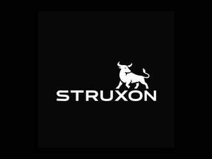

Trade Mark Journal No.2025/031 1 August 2025
UK00004237262 21 July 2025 (25,35)

- Class 25
- Clothing; Ready-to-wear clothing; Leisure clothing; Knitwear [clothing]; Casual clothing; Clothing for sports; Sports clothing; Parts of clothing, footwear and headgear; Woolen clothing; Clothing for leisure wear; Maternity clothing; Cashmere clothing; Jerseys [clothing]; Leather clothing; Clothing of leather; Leather (Clothing of -); Furs [clothing]; Jackets [clothing]; Jackets being sports clothing; Ready-made clothing; Linen clothing; Athletic clothing; Gloves [clothing]; Gloves as clothing; Garments for protecting clothing; Thermal clothing; Layettes [clothing]; Clothing layettes; Headbands [clothing]; Headbands for clothing; Wristbands [clothing]; Clothing for cycling; Denims [clothing]; Fishing clothing; Collars [clothing]; Pockets for clothing; Aprons [clothing]; Waterproof clothing; Weatherproof clothing; Silk clothing; Clothing for skiing; Windproof clothing; Dance clothing; Work clothes; Work shoes; Work overalls; Work boots; Exercise wear; Evening wear; Leisure wear; Formal wear; Maternity wear; Casual wear; Dresses for evening wear; Formal evening wear; Headgear for wear; Shoes for casual wear; Head wear; Ladies wear; Surf wear; Breeches for wear; Bridesmaids wear; Rain wear; Sports wear; Sashes for wear; Working overalls; Clothing for wear in judo practices; Face masks [fashion wear] ; Paper hats for wear by nurses; Ski wear; Swim wear for children; Tennis wear; Paper hats for wear by chefs; Clothing for wear in wrestling games; Infant wear; Children's wear; Swim wear for gentlemen and ladies; Dress shoes; Dress shirts; Dress pants; Padded shirts for athletic use; Korean outer jackets worn over basic garment [Magoja]; Fancy dress costumes; Outer clothing; Weather resistant outer clothing; Inner socks for footwear; Inner soles; Soles [Inner]; Collar liners for protecting clothing collars; Basic upper garment of Korean traditional clothes [Jeogori]; Gussets for underwear [parts of clothing]; Leather belts [clothing]; Fabric belts [clothing]; Dress shields; Shields (Dress -); Protective metal members for shoes and boots; Shell jackets; Gussets for bathing suits [parts of clothing]; Underarm gussets [parts of clothing]; Jacket liners; Gussets for leotards [parts of clothing]; Leather garments; Bra straps [parts of clothing]; Face mask [clothing] ; Gloves including those made of skin, hide or fur; Jogging bottoms [clothing]; Gussets [parts of clothing]; Clothes for sport; Sport shoes; Sport shirts; Footwear for sport; Footwear for use in sport; Boots for sport; Sport coats; Clothes for sports; Sports garments; Sports clothing [other than golf gloves]; Sports jerseys and breeches for sports; Sport stockings; Sports shoes; Sports pants; Sports headgear [other than helmets]; Footwear for sports; Sports footwear; Footwear not for sports; Sports shirts; Boots for sports; Sports jackets; Sports vests; Sports socks; Sports jerseys; Sports over uniforms; Sports singlets; Combative sports uniforms; Sports bras; Moisture-wicking sports pants; Moisture-wicking sports shirts; Sports bibs; Cleats for attachment to sports shoes; Moisture-wicking sports bras; Sports caps and hats; Golf clothing, other than gloves; Cycling shoes; Athletics footwear; Sports shirts with short sleeves; Athletics shoes; Sports caps; Clothing for horse-riding [other than riding hats]; Articles of sports clothing; Athletic footwear; Triathlon clothing; Athletic shoes; Football shoes; Sports [Boots for -]; Jackets; Windproof jackets; Blouson jackets; Fleece jackets; Sleeved jackets; Denim jackets; Leather jackets; Rainproof jackets; Wind-resistant jackets; Waterproof jackets; Sleeveless jackets; Sheepskin jackets; Quilted jackets [clothing]; Men's and women's jackets, coats, trousers, vests; Suede jackets; Bomber jackets; Weatherproof jackets; Motorcycle jackets; Fur jackets; Padded jackets; Camouflage jackets; Snowboard jackets; Ski jackets; Rain jackets; Fur coats and jackets; Reversible jackets; Fishing jackets; Hunting jackets; Sweat jackets; Heavy jackets; Knit jackets; Down jackets; Warm-up jackets; Wind jackets; Jackets (Stuff -) [clothing]; Stuff jackets [clothing]; Stuff jackets; Riding jackets; Casual jackets; Safari jackets; Bed jackets; Dinner jackets; Light-reflecting jackets; Fishermen's jackets; Smoking jackets; Track jackets; Long jackets; Donkey jackets; Waistcoats [vests]; Polar fleece jackets; Parkas; Anoraks [parkas]; Overcoats; Wind resistant jackets; Vests; Fleece vests; Gilets; Wind-resistant vests; Oilskins [clothing]; Quilted vests; Blazers; Outerwear; Corduroy shirts; Sweatshirts; Raincoats; Hoods [clothing]; Leather waistcoats; Coats of denim; Denim coats; Capes (clothing); Windcheaters; Camouflage vests; Waistcoats; Shorts [clothing]; Shirts for suits; Sweaters; Corduroy trousers; Waterproof trousers; Leather coats; Chaps (clothing); Jumpsuits; Belts [clothing]; Belts for clothing; Duffle coats; Kerchiefs [clothing]; Down vests; Overshirts; Hooded sweatshirts; Gloves for apparel; Jumpers [sweaters]; Trousers of leather; Bottoms [clothing]; Wind vests; Duffel coats; Corduroy pants; Visors [clothing]; Rainproof clothing; Turtleneck shirts; Hoodies; Collars for dresses; Trousers; Gym shorts; Gym boots; Gym suits; Jogging outfits; Jogging pants; Jogging shoes; Yoga shoes; Jogging sets [clothing]; Padded pants for athletic use; Clothing for gymnastics; Beach clothes; Padded shorts for athletic use; Men's dress socks; Yoga shirts; Boxing shoes; Jogging suits; Clothes; Sweatpants; Shoes for leisurewear; Yoga pants; Gymwear; Training shoes; Gymnastic shoes; Beach shoes; Sweat pants; Fitted swimming costumes with bra cups; Volleyball shoes; Athletic uniforms; Nappy pants [clothing]; Cycling pants; Sweat shirts; Sandals and beach shoes; Dance shoes; Lounge pants; Leisure shoes; Warm-up pants; Athletic tights; Sweat-absorbent underwear; Gabardines [clothing]; Veils [clothing]; Knitted clothing; Corsets [clothing, foundation garments]; Embroidered clothing; Bandeaux [clothing]; Playsuits [clothing]; Latex clothing; Trunks being clothing; Woven clothing; Infant clothing; Drawers [clothing]; Drawers as clothing; Ties [clothing]; Clothing for children; Muffs [clothing]; Bodies [clothing]; Clothing for babies; Tops [clothing]; Clothing for infants; Water-resistant clothing; Handwarmers [clothing]; Beach clothing; Cowls [clothing]; Men's clothing; Braces for clothing; Mitts [clothing].
- Class 35
- Business management of wholesale and retail outlets; Business management of retail outlets; Retail store services in the field of clothing; Administration of the business affairs of retail stores; Retail services connected with the sale of clothing and clothing accessories; Retail services in relation to clothing accessories; Retail services in relation to clothing; Online retail store services in relation to clothing; Retail services relating to clothing; Online retail store services relating to clothing; Mail order retail services for clothing accessories; Online retail services relating to clothing; Mail order retail services for clothing; Retail services in relation to fashion accessories; Retail services in relation to downloadable virtual clothing; Online retail services for downloadable virtual clothing; Mail order retail services connected with clothing accessories; Retail services in relation to footwear; Retail of third-party pre-paid cards for the purchase of clothing; Online retail services in relation to downloadable virtual clothing; Wholesale services in relation to clothing; Retail services in relation to downloadable virtual footwear; Wholesale services relating to clothing; Retail services in relation to headgear; Retail services in relation to bags; Online retail services in relation to downloadable virtual footwear; Online retail services relating to handbags; Retail services in relation to downloadable virtual handbags.
Jude Webb